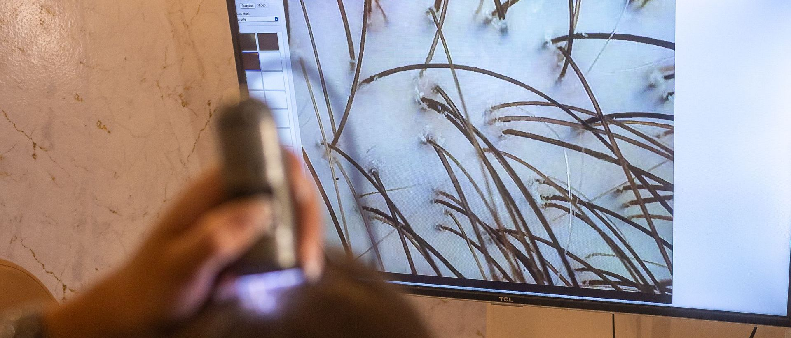

Sobre a Hairzenit
Depois de anos atendendo pacientes com queda e calvície, Larissa Pessoa decidiu transformar sua experiência em uma clínica especializada.


Por que a marca nasce

Durante anos, o consultório levou o nome de Larissa. E a pergunta que chegava a ele era quase sempre a mesma: vou ficar careca?
Responder exigia tempo. Exigia examinar o couro cabeludo de perto, investigar a causa, montar um plano e acompanhar cada etapa, por meses. Exigia, cada vez mais, uma equipe.
A Hairzenit é a resposta a essa demanda: uma clínica dedicada a um único assunto, a queda e a calvície, com equipe, método e estrutura para atender mais pessoas com o mesmo cuidado. Um método que não depende de uma pessoa só para existir, e uma fundadora que continua presente.
O nome
Zênite é o ponto mais alto do céu, bem acima de quem olha. Na tricologia, é de cima que se avalia o couro cabeludo: a vista do topo mostra a risca, a coroa e a densidade de uma só vez.

Hairzenit junta as duas ideias: o cabelo visto do ponto mais alto, e uma clínica que trabalha para levar cada caso ao melhor resultado possível.
A cabeça vista do zênite: a frente no alto, a coroa embaixo.
O que muda e o que continua
Muda
- O nome: Larissa Pessoa Tricologia Integrativa passa a se chamar Hairzenit.
- A estrutura: uma nova clínica, em construção, com inauguração em março de 2027.
- A equipe ganha nome e lugar: Thaina Candido de Souza e Júlia são tricologistas Hairzenit.
Continua
- Os atendimentos em Copacabana e Cabo Frio, até a inauguração.
- O WhatsApp (21) 97278-0789 e o Instagram @larissapessoatricologia.
- O método de avaliação e tratamento, sem cirurgia.
- Larissa Pessoa, que dirige a clínica e segue atendendo.
Larissa Pessoa e a Hairzenit
Larissa Pessoa é fundadora e CEO da Hairzenit e segue como tricologista da clínica. Quem procurava por ela continua encontrando, agora dentro de uma estrutura maior.

Mesma equipe, mesmos endereços, novo nome. Agende pelo WhatsApp.

Vamos conversar?
Copacabana e Cabo Frio, com hora marcada. WhatsApp (21) 97278-0789.